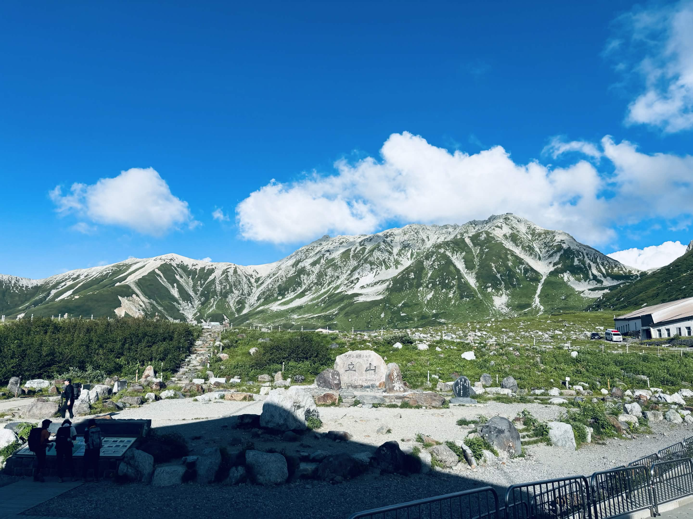
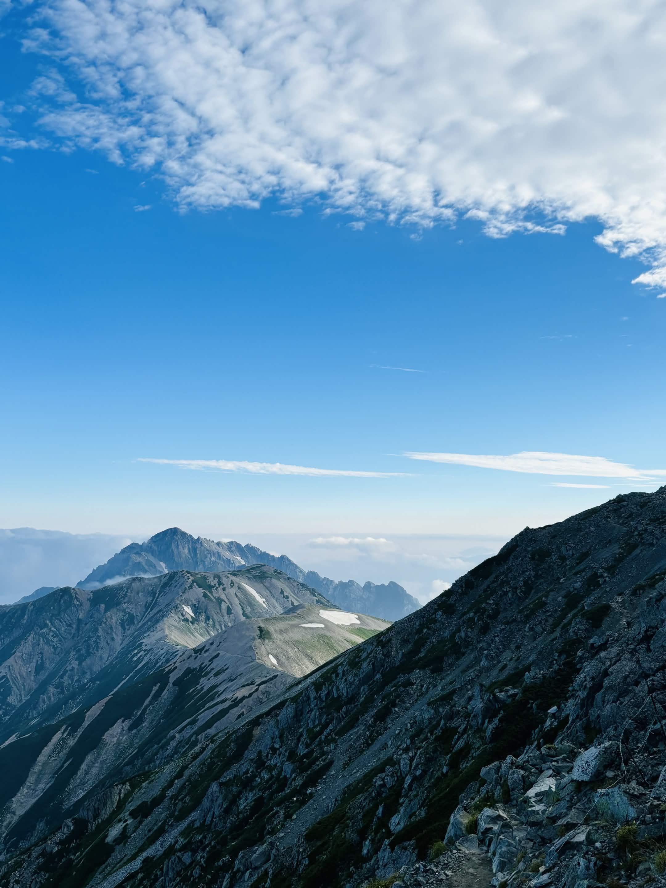
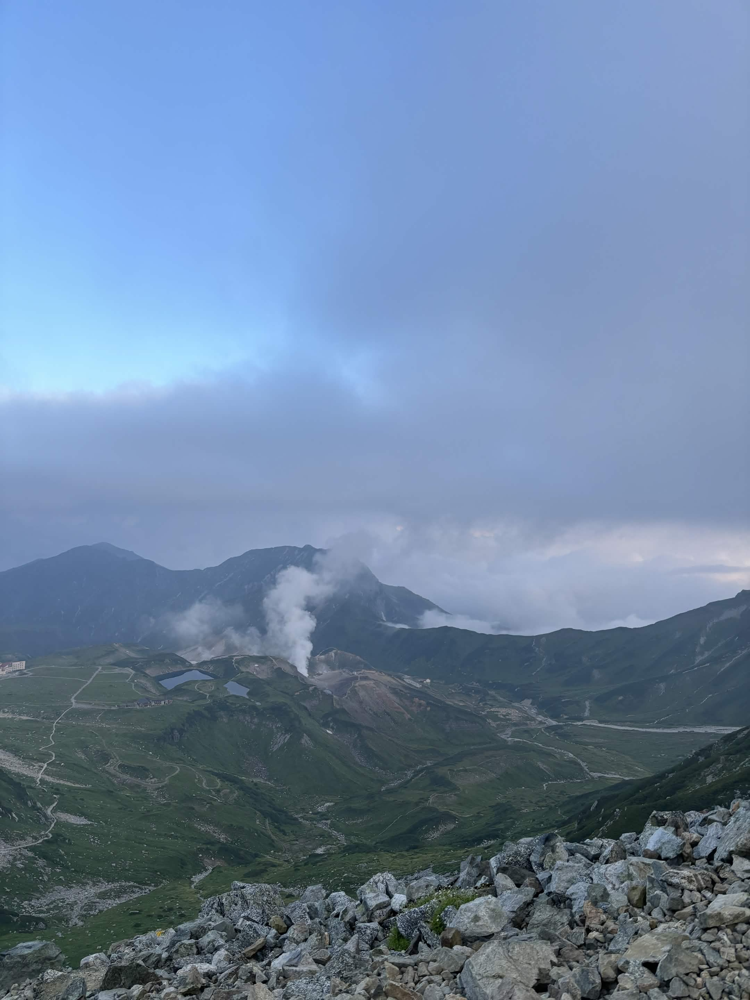

| 日程 | 2024年8月12日〜8月13日 |
|---|---|
| メンバー | ソロ（なし） |
| 難易度（俺流10段階） | 技術力 2 / 体力度 4 |
| アクセスコース目安 |
・室堂 → 雄山：約1時間15分 ・雄山 → 大汝山：約10分 ・大汝山 → 富士ノ折立：約20分（※今回は未踏） ・富士ノ折立 → 真砂岳：約40分 ・真砂岳 → 別山：約45分 ・別山 → 雷鳥沢テン場：約2時間30分 ・雷鳥沢テン場 → みくりが池：約40分 |

自分にとって記念すべき「初めての北アルプス」となった立山縦走（※富士ノ折立は通過）。行動時間が長く当時はかなり疲れを感じましたが、山を繋いで歩く縦走ならではの魅力を深く実感できた山行でした。

初の北アルプス挑戦として手応えと課題の双方を得られた貴重な2日間でした。今後さらにスケールの大きなルートや、より奥深い山域へアプローチできるよう、しっかりと体力を鍛え上げて次なる山行へ繋げていきます！
← HOMEへ戻る